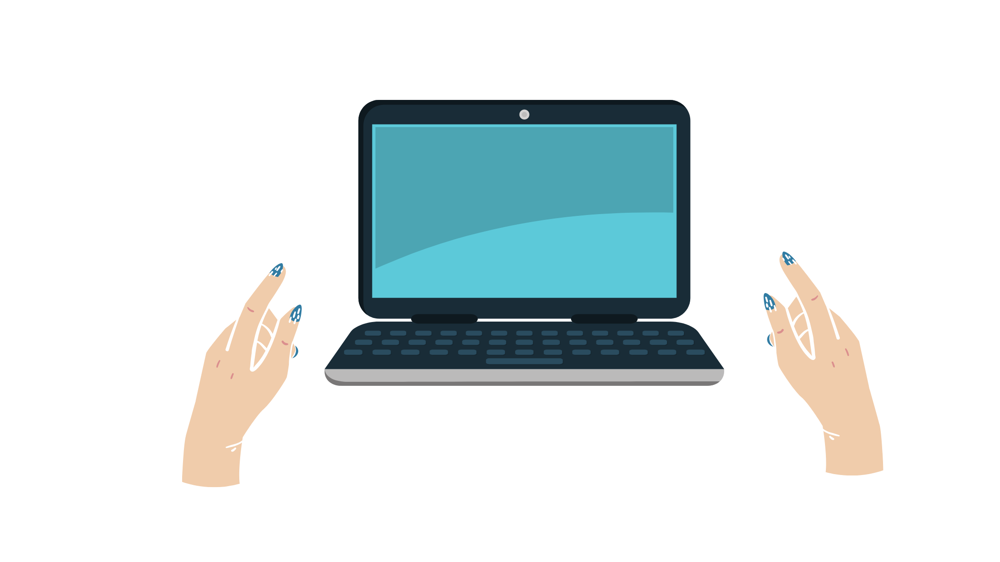
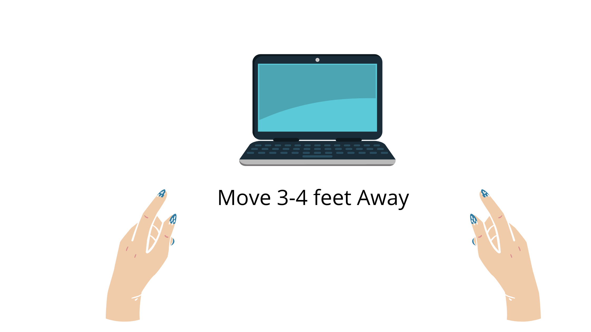
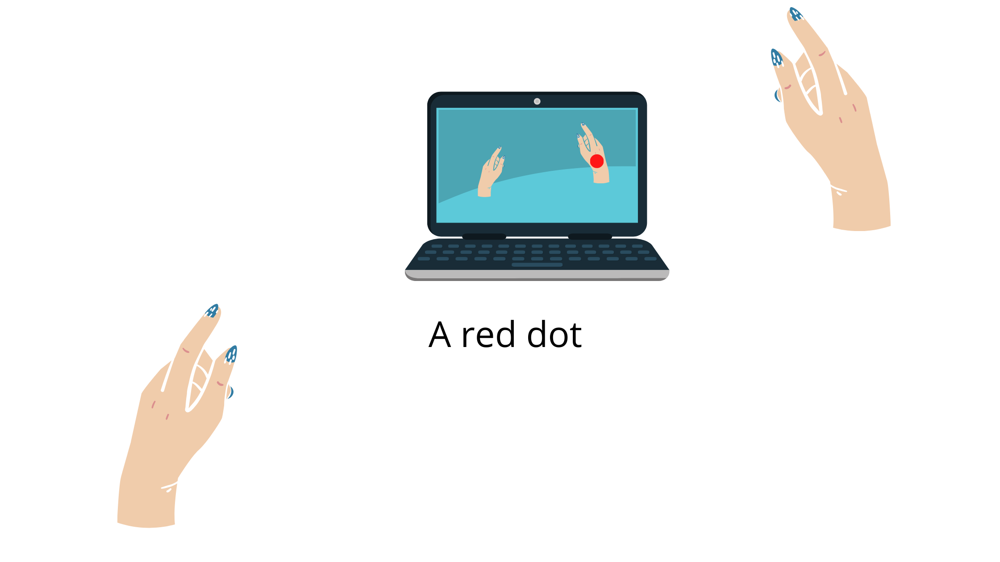
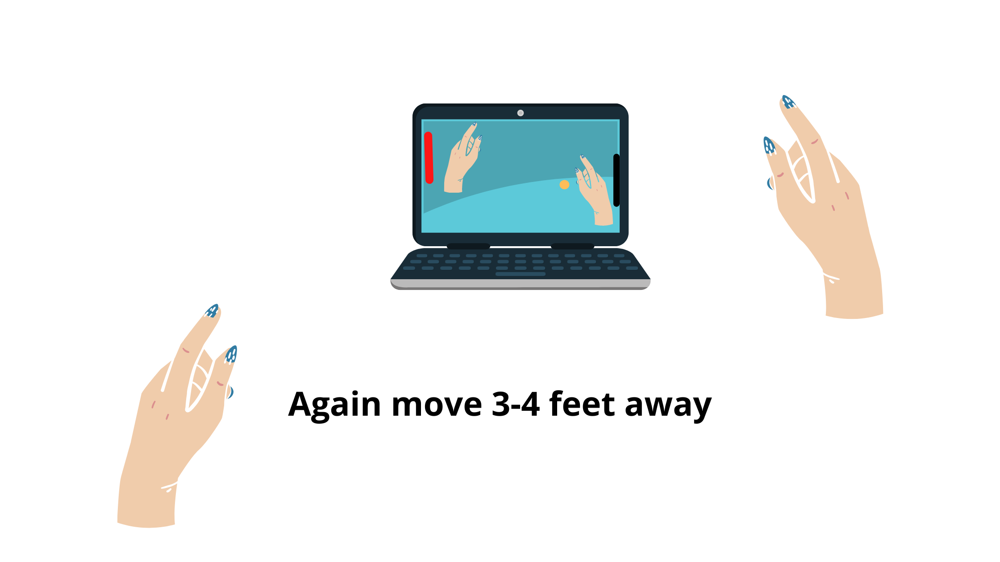

- First , keep your Laptop/Computer screen straight

- Move yourself approximately 3-4 feet away from the Laptop/Computer

- Move your Right Wrist in an ascending and descending manner, A red dot should appear on your right wrist .
- Now, press the play button , And again move yourself 3-4 feet away from Laptop/Computer

- The Red Paddel is your paddel , that will move as per the movement of your right wrist .

.